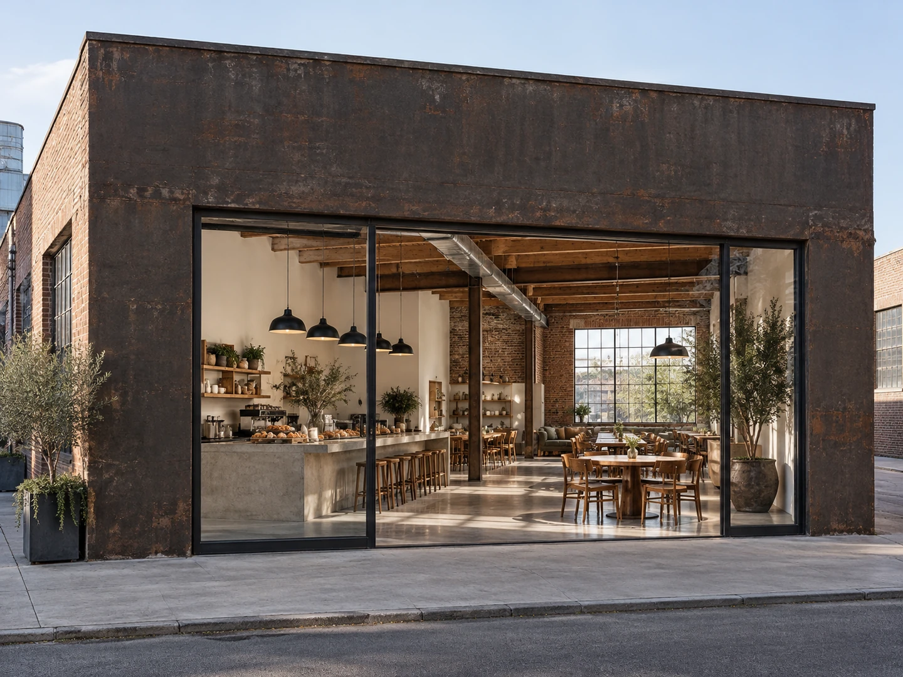

CONCEPT
お店の名前の前に、
まちの名前があります
KAMENOCHO STORE は、秋田市南通亀の町のヤマキウビル1階にあります。 店名は、そのまま町の名前です。
ひとりの「おいしい！」から、みんなの「たのしい！」を生みだすカフェダイニング
公式サイトに掲げられている言葉です。「日常の中の少しだけ特別な時間」を、暮らしの一部にしてもらう場所を目指していると書かれています。
亀の町は、繁華街・川反のすぐ近くにありながら、 昔ながらの商店街と飲食店と住宅が隣りあう場所です。 そこで、建物を一軒ずつ直して店にしていくという動きがありました。
2013年に居酒屋の跡がスペインバルに。 2014年に同じエリアへイタリア料理店。 そして2015年、コーヒースタンド＆デリとして亀の町ストアが開きました。 このあたりのことは「エリアリノベーション」と呼ばれています。
一軒のお店が、まちの続きとして建っている。 店名に町の名前が入っているのは、そういうことだと受け取りました。
